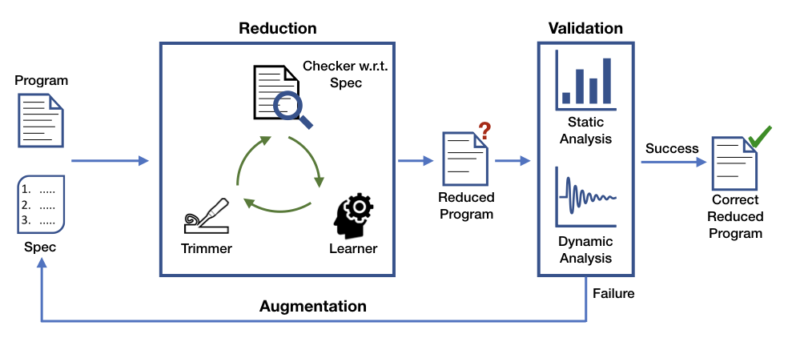

CHISEL: General-purpose software debloating
The size and complexity of modern software have been rapidly increasing, thereby causing security vulnerabilities as well as
performance degradation. The goal of this project is to build an automatic program debloating system to reverse this trend.
Unlike traditional approaches such as code optimization, our system aggressively removes undesired functionalities and customizes
the original program according to a given high-level specification. The project is addressing
a multitude of research problems such as how to specify the desired behavior,
how to efficiently debloat programs in language-specific and language-independent
ways, and what correctness guarantees to provide.

PETABLOX: AI-based program analysis framework
This project seeks to achieve a quantum leap in accuracy of static program analyses that target discovering deep semantic bugs
and security vulnearibilities in large C/C++/JAVA programs.
Even though a variety of techniques have significantly enhanced the performance of program analyzers,
traditional systems has been limited in their accuracy due to the fundamental reason, i.e., undecidability.
My research has tackled this limitation by incorporating external information such as user feedback.
The key insight is to rank analysis alarms by performing
inference on a conventional graphical model (e.g., a Bayesian network or a Markov
logic network) that quantifies the incompleteness in individual steps of reasoning
of the analysis.
EUPHONY: A probabilistic model-guided program synthesizer
A key challenge in program synthesis concerns how to efficiently search for the desired program in the space of
possible programs. We propose a general approach to accelerate search-based program synthesis by biasing
the search towards likely programs. Our approach targets a standard formulation, syntax-guided synthesis (SyGuS),
by extending the grammar of possible programs with a probabilistic model dictating the likelihood of each program.
We develop a weighted search algorithm to efficiently enumerate programs in order of their likelihood.
We also propose a method based on transfer learning that enables to effectively learn a powerful model, called probabilistic higher order grammar,
from known solutions in a domain. We have implemented our approach in a tool called Euphony and evaluate it on SyGuS benchmark problems from a variety of domains.
Links: [Tool]